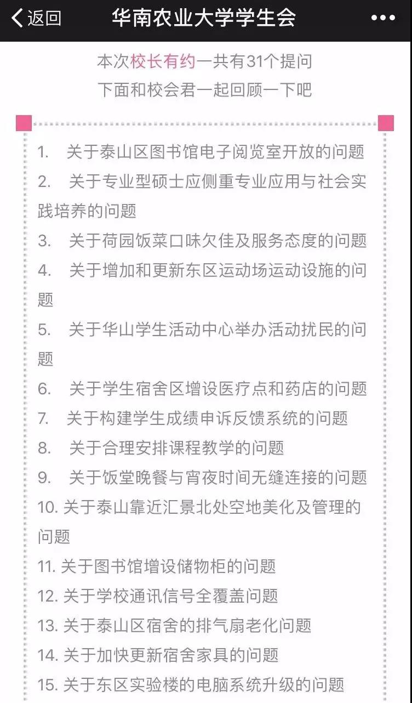
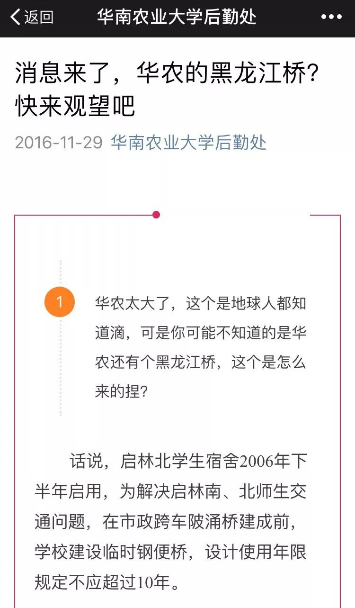
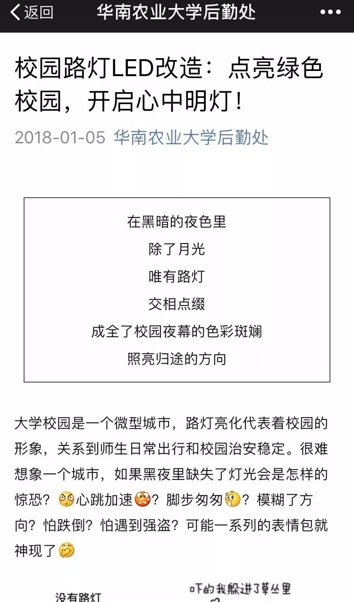
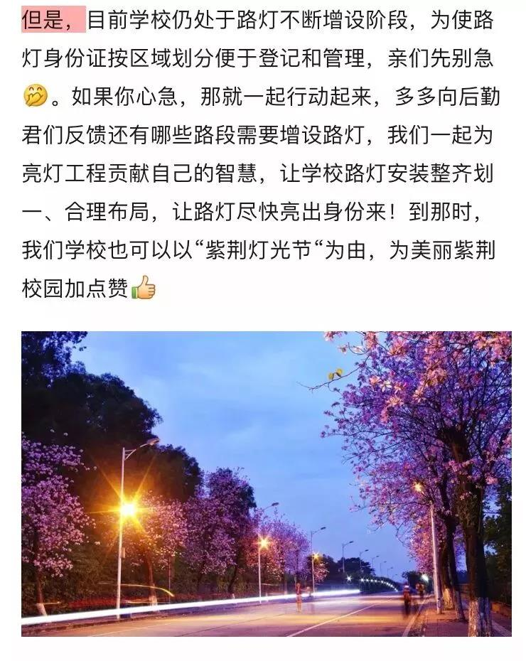
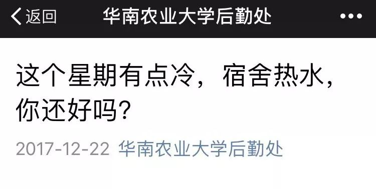
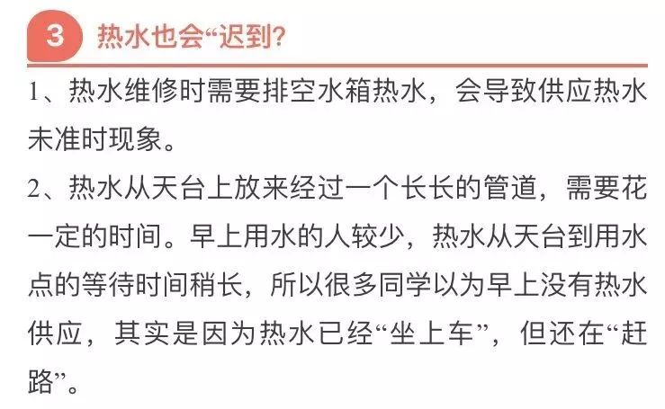

校长有约，这个响彻大华农的“约会形式”，
多么令人向往。就在1月6日阴雨绵绵的早上，
小朋友的“懒癌”不治而愈，不赖床奔赴此约，
与校长谈场想说就说，无所顾忌的“恋爱”。
我们看到了小盆友们对学校寄予的期望，
因为相信，所以坚持，认定可以看到希望。
再此感谢亲们对学校报以的信任，提案中，
后勤君梳理了需要后勤处去改进的内容。

你说你，想要荷园变身绿榕园吃嘛嘛香（提案3）
你说你，想要晚饭和夜宵无缝对接（提案9）
你说你，想要泰山空地摇身变美景（提案10）
你说你，想要“黑龙江桥”变宽并排水改造（提案18）
你说你，想要校园路灯全覆盖媲美广州灯光节（提案28）
你说你，想要图书馆插座更新换代手机足够亮（提案31）
你说你，想要一早热水扑面而来（赠送）
荷园这个被小朋友经常数落的饭堂，虽然2017年没有实现360度华丽转身，但是也确实使出浑身解数来了个180度的变化。首先，17年8月对荷园管理团队进行调整，然后又推陈出新荷园便当、荷园盖浇饭、猪肚煲鸡、荷园保温橱柜....
但是，荷园的改变还和学生们的期望有一定距离，让荷园有些招架不住了 ，此次约谈中又提及了口味欠佳的问题，真真的戳中了荷园师傅们的泪点。
来吧，从“什么地方”摔倒就在“什么地方”爬起来 ，2018年培训当先，开启厨师培训和交流的模式，不断满足师生日益增长的对美食的向往 。在选拔新厨师苗子的同时，增加厨师厨艺培训，制订菜品提升方案，以期改善食堂饭菜的口感问题。小盆友们有什么快速提升饭菜口感的“灵丹妙方”也不要吝啬，但是如果你让我通过增加调味剂来提味，ON,NO!我们拒绝添加太多调味品，因为饭堂还是安全第一的呢。
服务态度问题？这个千百年来困扰服务行业的大难题！谁不希望饭堂打饭阿姨们都带着蒙娜丽莎的微笑？谁不希望走进饭堂端着饭盆接受温暖的信号？可是，每个人的心情晴雨表不同，什么时候发脾气还真难把控呢 。尽管饮食服务中心每期培训都会强调态度问题，并坚持做好对售卖人员的监督工作，但是监督人员少，监控还不能实现实时监控，有时让师生受委屈真的好抱歉 。
当我们遇到态度问题时，第一时间记下他们的工号或姓名，并告知食堂管理人员，食堂会按照饮食服务中心奖惩办法进行处罚。如果看不清楚他们的工号，每个饭堂大厅都会设置员工一览表，只要你能记住他的脸，就可以正确投诉态度不好的售卖员。通过投诉--惩罚--管理--监督，通过制度来改变态度。
在这个事情上，小编也要多说两句，他们毕竟不是蒙娜丽莎，谁都有心情不好的时候，如果当遇到凶巴巴的售卖员，我们可以像下图大幂幂那样回馈她，露出我不和你一般见识的态度 ，然后露出微笑说：亲，是我惹你生气了吗？如果无法柔软他们的心情，那就投诉吧，后勤一号通和后勤官微人工客服随时等你们来召唤。
饭堂基本上是晚上5点到7点为晚饭时间，夜宵时间大部分是7点到10点，可是，偏偏有时候你去的时候饭菜收了？所剩无几了？爱吃的菜你去哪了？说好的无缝对接呢？
经了解，大部分饭堂还是遵守时间规则，做到了无缝对接，一小部分饭堂的确没有做到无缝对接，在此给亲们说声抱歉，产生这样的原因归纳为如下：
1、个别食堂收档的值班人员没有按要求到点收档，会对此类员工进行批评教育，同时后续会加强对员工的监管力度。
2、为避免浪费，每天预估食堂的饭菜总量计算偏少，等6点多时，饭菜全部卖完，因而造成提前收档。
3、有些食堂时间规则把控不好，也许是“心太软”，看到4：30左右“背着饿锅”来的小盆友，实在不忍心让他们挨饿就提前开了饭，导致饭菜无剩余提早收档。
在接下来的日子里，饭堂将虚心接受师生们的监督，就算是就餐高峰期过后，饭菜所剩无几了，我们也要至少保证有一个窗口等候您来享用晚餐。只要你们来，我们就在 。如果，哪天你发现去了饭堂没有任何窗口等你，请立刻、立刻、立刻联系饭堂经理或者后勤一号通85280111进行举报，我们是动真格的了！当即查实，不留后患，严肃处理。不过小编温馨提醒学霸们，书读千里，饱饭先行，饿肚子读书、做科研，不要太拼了，后勤君心疼你们。
此地块是第七教学楼和海洋学院实验楼项目的建设用地，现该项目还在方案设计及可行性研究阶段。未来建成后，美化和管理问题会进一步跟进，有关进程将通过后勤官微进行推送，敬请关注。就目前还未启动建设项目前，该用地将会逐一把坑坑洼洼的地段、暴露水管的地段、碎石满地的路段进行平整修复，不会种植植被，在迎新时将开放为停车场，以满足车辆停放需要。
还记得那个推文吗？没读到过，记不得，就怪当时粉丝少 。为解决“黑龙江桥”下雨成瀑布的“自然景观”，2016年学校在启林南和“黑龙江北”进行的截水沟建设，基本把雨水截到水沟里。
这两天正值花瓣雨季，后勤君也是去探测了该桥的排水情况,发现启林北和“黑龙江桥”底下由于市政排污工程的施工致使排水沟堵塞，截水沟盖板也因此受伤了 ，后续市政排污工程施工队将进行疏通和修复。但是，目前桥上的水还没有好办法去解决，虽然有些亲提出在桥上挖洞，但不符合安全操作规范，所以只能默默忍受桥上的水流潺潺了 。

有的同学希望看到“黑龙江桥”拓宽、堤固、岸绿、水清、面洁、景美的新气象，但是虽然我不想伤害你，还是要直白告诉你拓宽是不可能的，让小编慢慢道出原因和规划。
2016年下半年，在启林北学生宿舍建成后不久，为解决启林南、北师生交通问题，搭建了此临时钢便桥。由于河涌两岸土地属于农业用地，天河区建设局要等国土局调整用地性质后，由区政府和市政府出资来搭建跨车陂涌永久性的桥。
目前，学校配合建水局完成了初步设计。后续，学校将积极协调和推进此桥建设。至于你期望的堤固、岸绿、水清、面洁、景美实现指日可待，五山街道办事处一直为打好河涌治理攻坚战努力ing。

当小编看到小盆友提这个的时候，顿时心塞，看来我们宣传工作没有普及。2018年1月5日发布的路灯推文，1月6日校长与你约会，你就又给搬出来了 ？能好好当后勤君的粉丝吗？其他不说，先来增个粉吧 ....要不你哪天在约会中又谈“老掉牙”的话题，可不是约会专业户哦！现在是伤心的小编，不想打字，只想截图啦 。

学校目前很想让路灯全覆盖，也想让路灯身份证快快启动，更想去媲美广州灯光节，哪里需要装，哪里怎么装，快快在路灯推文后面继续提出好的意见和建议，路灯全覆盖有你的支持，才有大大的希望哦
2018年1月6日校长有约学生提到这个，1月9日后勤处派出相关人员对图书馆书库和期刊室进行了全方位的检查。检查中发现，目前插座无法使用的原因大多来源于插座本身故障，只有少部分是线路老化和故障问题。责任单位华信物业将在10个工作日内对书库和期刊室进行整改，你希望的手机满格的幸福感是不是快来了 ？其他的阅览室也将逐步进行更换，对于有新增需求的同学可以将意见反馈给图书馆相关负责人，后勤处会根据图书馆的具体需求，配合编制方案和预算，待落实经费后进行加装。

明确告诉你，2017年9月起，早上起床真的有热水。校长有约上提出没有热水的小朋友，我想说，你肯定是个急性子 为什么这么说，看推文截图：

2017年12月22日冷空气来袭第一波，后勤官微就推送过热水相关的推文。啥也不说了，都是眼泪 ，如果你早已是后勤官微粉丝，那你就是个僵尸粉，如果你还不是我的粉丝，想要了解热水，想要知道饭堂外卖最新进展，想要知道....就赶快扫码关注吧，这里的信息都是你在乎的！
P.S.设施报修：后勤官微——便民服务——后勤服务平台
投诉建议：后勤官微在线客服，紧急时拨打后勤一号通
你的权益 我们在意
我们和校长下期再约！
信息来源：华南农业大学后勤处
信息整合：校会新媒体运营部